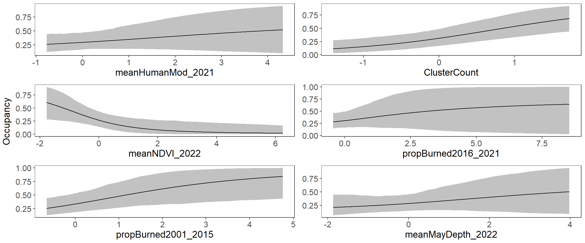

| elpd | nparam | elpd_diff | se_diff | |
|---|---|---|---|---|
| Model3 | -210.723 | 14.384 | 0.000 | 0.000 |
| Model1 | -212.666 | 11.702 | -1.943 | 3.316 |
| Mode2 | -218.209 | 15.535 | -7.486 | 3.836 |
Wolverine 2022 Inference
Inference
To investigate spatial factors affecting wolverine occupancy, we will use non-spatial Bayesian single-season occupancy models (via the R package UBMS and Unmarked). These models are more straightforward to interpret as there is no trading off between the spatial covariates of interest and a generalized spatial neighborhood process (used in the spatial occupancy model); the spatial occupancy models is intended for prediction, rather than inference.
To consider the spatial variables that influence wolverines occurence, we should only consider areas that have wolverines (Montana, Washington, Wyoming, Idaho). The states that do not have wolverines (or detected wolverines; Colorado, Utah, Oregon) do not help us understand the spatial factors because there are no wolverines available to select a certain site and not another site. Therefore, this analysis is limited to the 4-state sampling frame.
Covariates
These variables were derived by Jake Ivan and confirmed to be accurate.
propBurned2016_2021: The mean proportion a cell was burned between 2016 and 2021. Increasing values are hypothesized to decrease occupancy; recent fires potentially decrease food/cover.
propBurned2001_2015: The mean proportion a cell was burned between 2001 and 2015. Increasing values are hypothesized to increase occupancy; old fires potentially increase food/cover.
propBurned2001_2021: The mean proportion a cell was burned between 2001 and 2021. Mixes recent and old fires. Probably do not use.
meanHumanMod_2021: The mean measure of human modification from Dave Theolbald.
meanNDVI_2022: The mean NDVI per cell from 2010-2020 for the same set of months each year.
propCopelandInman: Predicted potential habitat from CoplelandInman model. Increasing values are hypothesized to increase occupancy. Used to define the sampling frame.
ClusterCount: This was derived from the ArcGIS Pro Spatially Constrained Multivariate Clustering Tool. According to ESRI this tool “finds spatially contiguous clusters of features based on a set of feature attribute values and optional cluster size limits.” The feature attribute selected was the variable propCopelandInman and the max cluster size was 50 across all 7 states. Increasing values are hypothesized to increase occupancy as connectivity of habitat makes it easier for wolverine to move around and find necessary resources.
SDMayDepth2022: Standard deviation of snow depth in May. Decreasing values are hypothesized to increase occupancy (more consistency at low values).
MeanMayDepth2022: Mean snow depth in May. Increasing values are hypothesized to increase occupancy, up to some point.
SDMaySWE2022: Standard deviation of snow water equivalent in May. Decreasing values are hypothesized to increase occupancy (more consistency at low values).
MeanMaySWE2022: Mean snow water equivalent in May. Increasing values are hypothesized to increase occupancy, up to some point.
Spatial Plots

Covariate Correlations

Noted High Pairwise Correlations
Preferred covariates in bold:
propBurned2001_2021 and propBurned2016_2021
propCopelandInman and meanHumanMod_2021 ; medium correlation.
propCopelandInman and ClusterCount and snow measures
All snow measures are correlated. Use MeanMayDepth2022.
Models
We considered three models. In each, the variables hypothesized to effect occupancy varied (see below; general summary of the model and model syntax) while detection probability was always hypothesized to be effected by whether a site had bait or lure.
We will compare models using the expected log pointwise predictive density (elpd; lower is better; Vehtari et al. 2016).
-
Model 1: Human Modification*Habitat Connectivity
- meanHumanMod_2021*ClusterCount
-
Model 2: Environmental model (NDVI with quadratic, burn, and Snow with quadratic)
- meanNDVI_2022 + I(meanNDVI_2022^2) + propBurned2016_2021 + propBurned2001_2015 + meanMayDepth_2022 + I(meanMayDepth_2022^2)
-
Model 3: Simple Environmental and Human Modification with Connectivity
- meanHumanMod_2021 + ClusterCount + meanNDVI_2022 + propBurned2016_2021 + propBurned2001_2015 + meanMayDepth_2022
Results
Model Comparison
Model 3 was most supported, as measured by expected log-poinwise predicted density (elpd). However, there isn’t that much difference among models, especically when considering the variation (se_diff).
MCMC Convergence
All parameter from the most supported model have convereged.
Goodness of fit
No departure of model fit using this test statistic.
Model Summary
Call:
stan_occu(formula = ~SiteType2022 ~ meanHumanMod_2021 + ClusterCount +
meanNDVI_2022 + propBurned2016_2021 + propBurned2001_2015 +
meanMayDepth_2022, data = umf.2022, chains = 3, iter = 2000,
cores = 3, seed = 123)
Occupancy (logit-scale):
Estimate SD 2.5% 97.5% n_eff Rhat
(Intercept) -0.442 0.401 -1.174 0.397 1864 1
meanHumanMod_2021 0.230 0.287 -0.316 0.807 2496 1
ClusterCount 0.988 0.327 0.404 1.694 2426 1
meanNDVI_2022 -0.857 0.432 -1.787 -0.120 2193 1
propBurned2016_2021 0.283 0.384 -0.353 1.129 2018 1
propBurned2001_2015 0.618 0.307 0.108 1.336 1580 1
meanMayDepth_2022 0.268 0.316 -0.305 0.939 2150 1
Detection (logit-scale):
Estimate SD 2.5% 97.5% n_eff Rhat
(Intercept) 0.632 0.206 0.233 1.05 2747 1
SiteType2022Lure -2.256 0.400 -3.018 -1.44 1737 1
LOOIC: 421.446
Runtime: 4.262 secProbability of Support
| Probability>0 | |
|---|---|
| Occ.Intercept | 0.16 |
| Occ.meanHumanMod_2012 | 0.77 |
| Occ.ClusterCount | 1.00 |
| Occ.meanNDVI2022 | 0.02 |
| Occ.PropBurned2016-2021 | 0.78 |
| Occ.PropBurned2001-2015 | 0.99 |
| Occ_MeanMayDepth | 0.79 |
| Det.Intercept | 1.00 |
| Det.SiteType | 0.00 |
A probability near 1 indicates a strong support for a positive effect.
A probability near 0 indicates a strong support for a negative effect.
Probabilities between 0.1 and 0.9 indicate mild or no statistical support.
Marginal Effect Plots

Note that the x-axes vary, based on the standardization of the variable.
Summary
There is clear statistical support that increasing connectivity (
ClusterCount) leads to increase wolverine occupancy.There is clear statistical support that increasing
meanNDVI_2022leads to decreasing wolverine occupancy.There is clear statistical support that increasing old fires (
PropBurned2001-2015) leads to increasing wolverine occupancy.There is clear statistical support that lure decreases the probability of detection at an occupied site relative to bait sites.
References
Vehtari, A., Gelman, A., and Gabry, J. (2017). Practical Bayesian model evaluation using leave-one-out cross-validation and WAIC. Statistics and Computing. 27(5), 1413–1432. doi:10.1007/s11222-016-9696-4